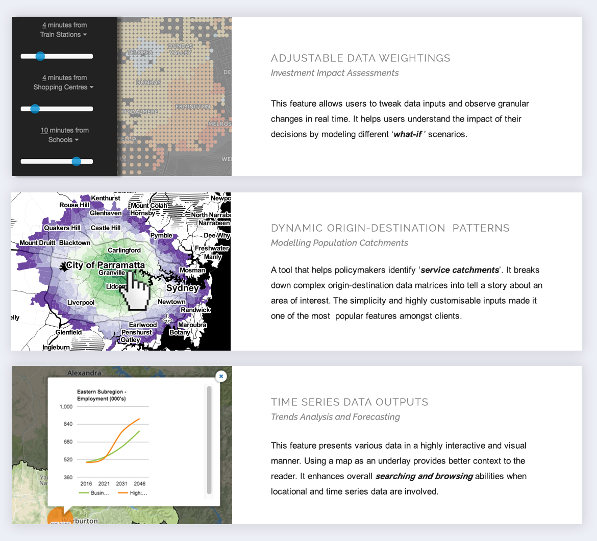
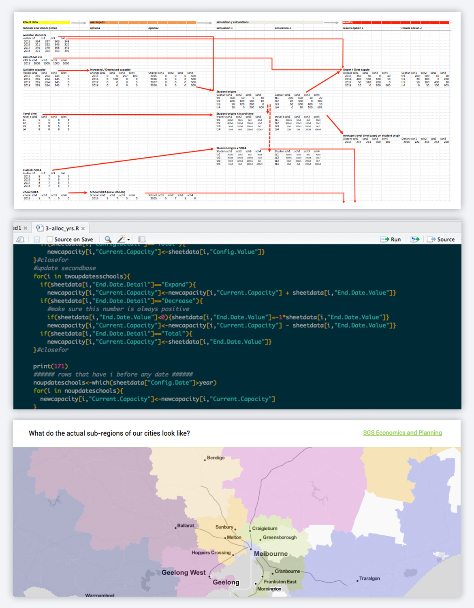

Better tools, smarter cities
Complex, rapidly updated data now comes from everywhere as organisations move their services onto digital platforms and we move closer to the ‘internet of things’ and the ‘smart city’. But at where I used to work, consulting projects are often finalised into long and wordy non-digital reports. Complex and crucial results were not always easy to understand. But PDF reports offered little channels for clients to test sensitivity and engage with the results. Projects would often go overbudget due to iterations at reporting stages. At times, amendments seemed accessory but the efforts were non trivial. Identifying the need for better reporting tools, I began investigating different pathways to transform their reports onto digital and automated platforms.
My role
Product strategy and management Developing the minimal viable product (MVP), I identified quick wins and shortest success paths that allowed me to build a time and cost effective product.
Satisfying old and new clients Tailoring products to customers, I engaged with clients, tackled their pain points, came up with methodical solutions and won their trust.
Design integration and oversight I built up the digital reporting environment from scratch. I oversaw every detail from conceptualising, prototyping, coding, testing and delivery.

Processes
Hypothesis and Proof of Concept
I researched a number of solutions and platforms that can be easily integrated with our current website. I developed prototypes and widgets for blogs and bulletins as proof of concept for this idea.
Measuring success
I monitored the site's page views and browsing time to gauge users' interest in the product. Iteratively, I improved the product based on user engagement metrics and feedback from colleagues. I also came up with a system to estimate the profitability of the product.
Product continuity
I analysed progress and identified long term and short term goals for these suit of products. I taught junior colleagues how to continuously use and develop these platforms. I also facilitated workshops, gave talks to raise awareness about the broader topic and aligned the organisation's goals for digital transformation.
Listening to the customers
When deciding which features to build, I analysed the organisation's product offer, project trends, clients' feedback and built them in priority order.
Science meets functionality
Working closely with our modellers and econometricians, I developed methods to automate calculations and ultimately, reporting analytical results. Leveraging deep understanding of the science, I helped clients identify their underlying problem and carved out a solution that was best for them.
Results
I built up a portfolio of clients in a short amount of time and persuaded the firm to further invest in this area. I lead the 'digital solutions' team to completing their first official assignment with a major NSW Government client. I leveraged the firm's image as a key innovator in the area. Improvements in each project release leads to a more concrete vision for the overall digital product.